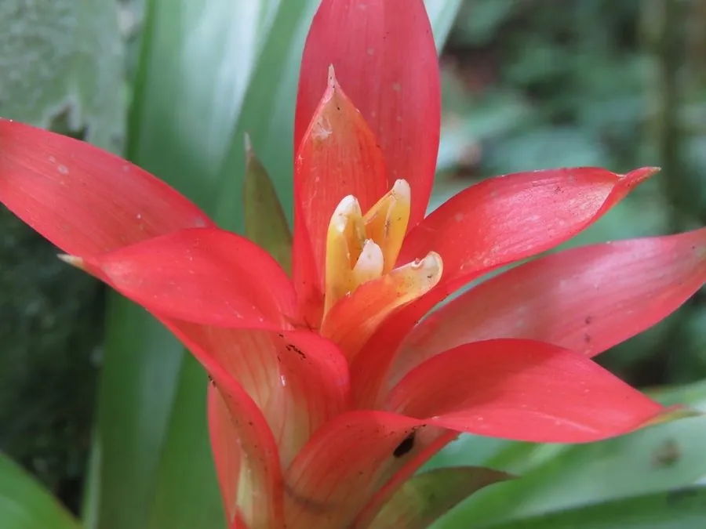

花卉与草本 · 植物界
观赏凤梨 Guzmania lingulata

凤梨科多年生附生草本，苞片鲜艳如星、花期长，是室内盆栽的常见观花观叶植物，原产中南美洲热带雨林。
- 分类
- 门被子植物门纲木兰纲目禾本目科凤梨科属果子曼属
- 栖息环境
- 中南美洲热带雨林的树干与岩石上，喜温暖、湿润、散射光
- 地理分布
- 原产中南美洲，现世界各地盆栽，中国各地花市常见
- 保护级别
- 暂无评估
物种志
观赏凤梨为凤梨科果子曼属多年生附生草本，株高 20–40 厘米，叶片带状、革质，莲座状排列，中央形成水槽。花序自叶丛中央抽出，苞片鲜红、橙或黄色，小花黄色或白色，花期可长达数月；果实为浆果。
观赏凤梨原产中南美洲的热带雨林，附生于树干和岩石上，喜温暖、湿润和明亮的散射光，忌强光暴晒和积水。它苞片鲜艳、花期长，是室内盆栽的常见观花观叶植物，叶丛中央的水槽可储存水分；栽培常用树皮、水苔等透气基质，保持叶心有水但避免腐烂。母株开花后基部会萌发侧芽，侧芽长成后可分株繁殖。
形态与习性
- 株高20–40 厘米，莲座状
- 花期花期可长达数月
- 果期花后结浆果
- 光照喜明亮散射光，忌强光
- 水分叶心水槽储水，忌积水腐烂
- 土壤以树皮、水苔等附生基质栽培
- 繁殖分株繁殖
- 主要用途室内盆栽、案头观赏
趣味知识
- 观赏凤梨的鲜艳部分多为苞片，真正的花较小。
- 它叶丛中央形成水槽，可储存水分供植株吸收。
- 观赏凤梨原产中南美洲雨林，是附生植物。
- 母株开花后基部会萌发侧芽，可分株繁殖。